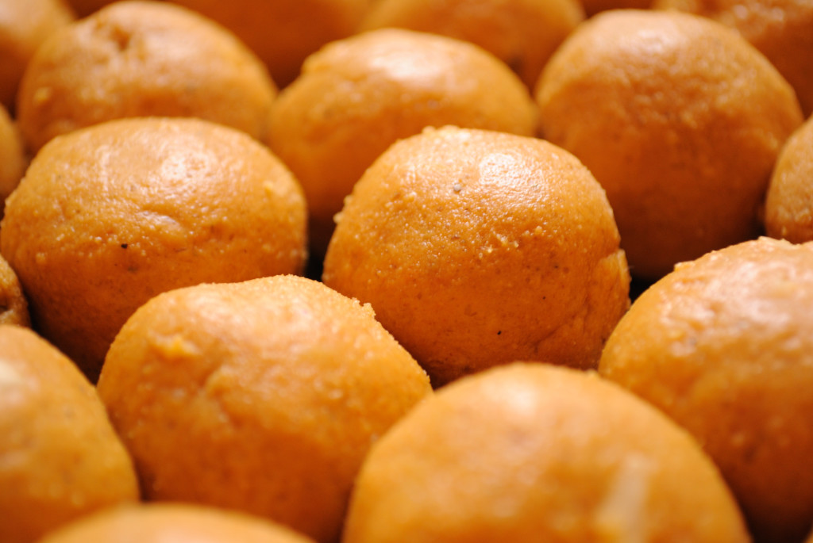

Besan ladu Recipe |
| Rateing |
| prep time:20 minit |
| cook time:25 minit |
| total time:45 minit |
|  |
Ingredients: |
250 gm Besan(chickpea flour)
200 gm sugar
100 gm Ghee
2 tsp cardamom powder
50 gm raisins
Ghee for frying
Water according to requirement
|
Instructions: |
|
Sieve flour and by adding warm water make hard dough.
Make small balls from dough.
Heat ghee in a pan at medium flame.
Fry all small balls in it till it becomes light brown in color.
When it becomes cool, grind it in a mixture jar properly.
Also sieve it.
Now in other vessel take sugar and add water till sugar deep.
Heat it properly till 2 treads of it is formed.(make sugar syrup)
Mix with fried ball powder, cardamom and raisins. Make small balls and serve. |
video: |